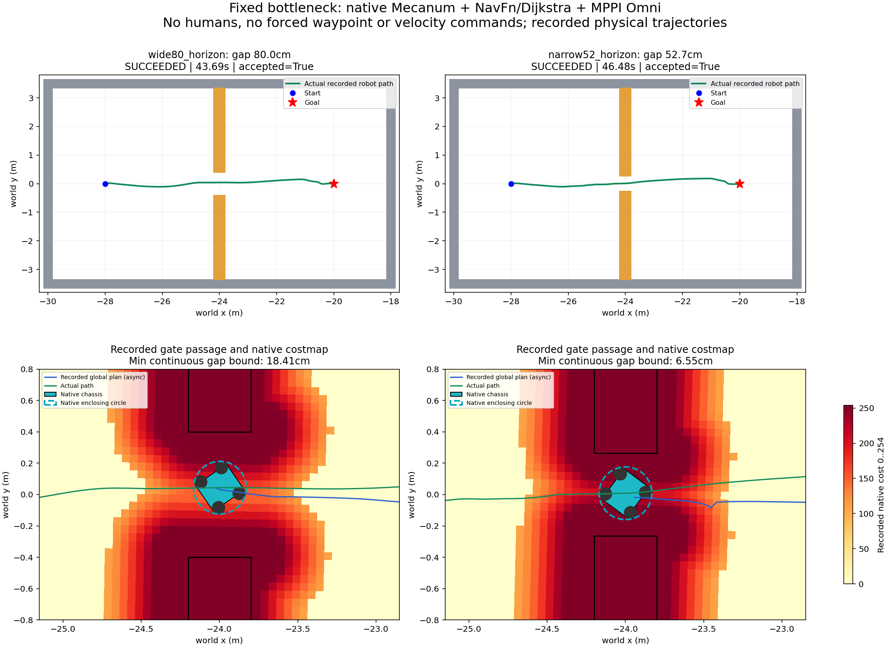

Đã chạy thật: robot qua khe 52,7 cm
Robot Mecanum đã tự đi xuyên khe giữa hai vật cản cố định và tới đích bằng NavFn/Dijkstra + MPPI Omni. Không ép waypoint, không phát lệnh vận tốc theo kịch bản.
Xem camera thật — khe 52,7 cm
Camera RGB Gazebo đã ghi, mã hóa lại VP8 có mất mát; 1 ảnh/giây mô phỏng thành4fps, mặc định4×. Không có ảnh AI sinh. Video1× vẫn chỉ có một ảnh gốc mỗi giây, không phải tốc độ render của mô phỏng.
Khe52,7cm: tới đích46,48s mô phỏng, đường8,074m, sai số đích thật5,65cm. Khoảng hở nhỏ nhất bảo thủ dọc toàn quỹ đạo: 6,55cm. Tại mặt phẳng giữa cửa khe:8,71cm.
Đã thay đổi gì để đi được?
| Cấu hình thử | Khe80cm | Khe52,7cm |
|---|
| Ban đầu: CostCritic16/140, horizon1,5s | TIMEOUT · 90.0s | TIMEOUT · 90.0s |
| CostCritic3,81/253, horizon1,5s | TIMEOUT · 90.0s | TIMEOUT · 90.0s |
| CostCritic3,81/253, horizon5s | SUCCEEDED · 43.7s | SUCCEEDED · 46.5s |
Chỉ đổi CostCritic chưa đủ. Ở tốc độ tối đa0,3m/s, horizon1,5s chỉ phủ tối đa0,45m. Cấu hình đã qua khe dùng100 bước ×0,05s =5s, phủ tối đa1,5m trước khi tính gia tốc; nhờ đó phép tối ưu có thể xét xa hơn qua cả vùng chi phí quanh cửa khe.
Kết quả thực nghiệm cho thấy cấu hình CostCritic3,81/253 + horizon5s đi được hai khe này. Đây là thay đổi chung ba tham số so với ban đầu; so với lượt CostCritic riêng, chỉ time_steps30→100 thay đổi. Chưa tách riêng hiệu quả từng tham số bằng benchmark nhiều seed, và chưa ghi điểm từng critic/rollout.
Footprint/radius0,17m + padding0,01m, inflation0,45m, cost scaling3, tốc độ, map, hình học robot, mức phạt va chạm2.000.000 và kiểm tra ô253/254 giữ nguyên. YAML mặc định của ROS/Nav2 và các cảnh có người không được thay đổi.
Quỹ đạo vật lý và costmap nguyên bản

Xanh lá: tọa độ robot Gazebo đã ghi. Xanh dương: global plan đã ghi, căn thời gian gần nhất. Vòng cyan: đường tròn bao toàn bộ collision robot, bán kính0,16806m, dùng để đánh giá khoảng hở với mọi góc yaw. Hai vách màu cam nối tới tường biên nên không có đường vòng qua đầu vách.
Khoảng hở là cận dưới bảo thủ từ các đoạn nội suy tuyến tính giữa pose đã ghi và6 hộp vật cản; không phải bản ghi lực tiếp xúc. Hai lượt đạt điều kiện đến đích + qua khe + cận dưới khoảng hở dương. Cả6 lượt audit dữ liệu PASS;4 lượt timeout vẫn được giữ nguyên.
Camera lượt khe80cm
Tới đích43,69s, đường8,069m, sai số đích thật5,05cm, cận dưới khoảng hở nhỏ nhất18,41cm.